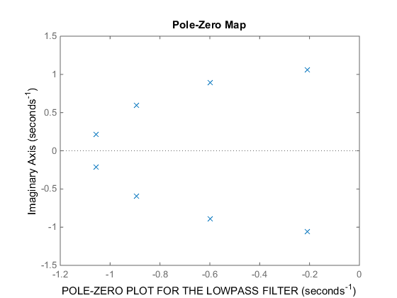
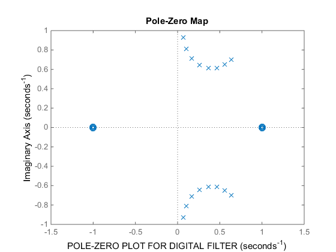
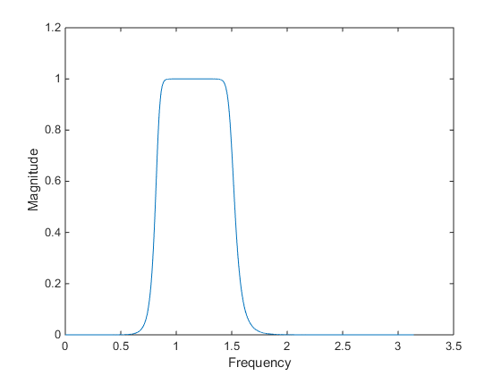

disp('BUTTERWORTH BANDPASS IIR FILTER :');
syms s;
samp_freq=50;
m=53;
q_m=floor(0.1*m);
r_m=m-10*q_m;
disp('1) UNNORMALISED DISCRETE TIME FILTER SPECIFICATIONS');
B_L=4+0.7*q_m+2*r_m
B_H=B_L+10
S_L=B_L-2
S_H=B_H+2
disp('PASSBAND----->MONOTONIC');
disp('2) NORMALISED DIGITAL FILTER SPECIFICATIONS');
N_B_L=(B_L/samp_freq)*pi
N_B_H=(B_H/samp_freq)*pi
N_S_L=(S_L/samp_freq)*pi
N_S_H=(S_H/samp_freq)*pi
disp('3) ANALOG FILTER SPECIFICATIONS AFTER BILINEAR TRANSFORMATION');
omega_s_l=tan(N_S_L/2)
omega_s_h=tan(N_S_H/2)
omega_p_l=tan(N_B_L/2)
omega_p_h=tan(N_B_H/2)
disp('4) FREQUENCY TRANSFORMATION---->(s^2)+(omega_o^2))/(band*s)');
omega_o=sqrt(omega_p_l*omega_p_h)
band=omega_p_h-omega_p_l
disp('5) FREQUENCY TRANSFORMED LOWPASS ANALOG FILTER SPECIFICATIONS');
omega_p_l_t=((omega_p_l)^2 - (omega_o)^2)/(band*omega_p_l)
omega_p_h_t=((omega_p_h)^2 - (omega_o)^2)/(band*omega_p_h)
omega_s_l_t=abs(((omega_s_l)^2 - (omega_o)^2)/(band*omega_s_l));
omega_s_h_t=abs(((omega_s_h)^2 - (omega_o)^2)/(band*omega_s_h));
if omega_s_l_t>omega_s_h_t
omega_low_s=omega_s_h_t
else
omega_low_s=omega_s_l_t
end
d_2=(1/(0.15*0.15))-1;
d_1=(1/(0.85*0.85))-1;
num_log=d_2/d_1;
den_log=omega_low_s/omega_p_h_t;
N=ceil(0.5*(log(num_log)/log(den_log)))
omega_c=((d_1^(-1/(2*N)))+(omega_low_s*(d_2^(-1/(2*N)))))/2
k=0;
poles=[];
for k = 0:N-1
angle=(((2*k)+1)/(2*N)*pi)+(pi/2);
poles=[poles omega_c*exp(1j*angle)];
end
Zeros=[];
K=(omega_c^N);
[num,den]=zp2tf(Zeros,poles,K);
disp('6) LOWPASS FILTER TRANSFER FUNCTION');
H=tf(num,den)
disp('POLES OF THE LOWPASS FILTER TRANSFER FUNCTION');
poles
figure
pzmap(num,den)
xlabel('POLE-ZERO PLOT FOR THE LOWPASS FILTER');
g=((s^2)+(omega_o)^2)/(band*s);
disp('7) BANDPASS FILTER TRANSFER FUNCTION');
band_pass=K/poly2sym(den,g)
[band_num,band_den]=numden(band_pass);
band_num1=sym2poly(band_num);
band_den1=sym2poly(band_den);
syms z;
f=(1-((z)^-1))/(1+((z)^-1));
disp('8) DISCRETE TIME FILTER TRANSFER FUNCTION');
z_tf=(poly2sym(band_num1,f))/(poly2sym(band_den1,f))
[z_tf_num,z_tf_den]=numden(z_tf);
z_tf_num1=sym2poly(z_tf_num)
z_tf_den1=sym2poly(z_tf_den)
figure
pzmap(z_tf_num1,z_tf_den1)
xlabel('POLE-ZERO PLOT FOR DIGITAL FILTER');
[h,w] = freqz(z_tf_num1,z_tf_den1,10000);
figure
plot(w,(abs(h)))
xlabel('Frequency')
ylabel('Magnitude')
BUTTERWORTH BANDPASS IIR FILTER :
1) UNNORMALISED DISCRETE TIME FILTER SPECIFICATIONS
B_L =
13.5000
B_H =
23.5000
S_L =
11.5000
S_H =
25.5000
PASSBAND----->MONOTONIC
2) NORMALISED DIGITAL FILTER SPECIFICATIONS
N_B_L =
0.8482
N_B_H =
1.4765
N_S_L =
0.7226
N_S_H =
1.6022
3) ANALOG FILTER SPECIFICATIONS AFTER BILINEAR TRANSFORMATION
omega_s_l =
0.3779
omega_s_h =
1.0319
omega_p_l =
0.4515
omega_p_h =
0.9099
4) FREQUENCY TRANSFORMATION---->(s^2)+(omega_o^2))/(band*s)
omega_o =
0.6410
band =
0.4584
5) FREQUENCY TRANSFORMED LOWPASS ANALOG FILTER SPECIFICATIONS
omega_p_l_t =
-1.0000
omega_p_h_t =
1.0000
omega_low_s =
1.3826
N =
8
omega_c =
1.0769
6) LOWPASS FILTER TRANSFER FUNCTION
H =
1.809
------------------------------------------------------------------------
s^8 + 5.52 s^7 + 15.24 s^6 + 27.29 s^5 + 34.55 s^4 + 31.64 s^3
+ 20.49 s^2 + 8.611 s + 1.809
Continuous-time transfer function.
POLES OF THE LOWPASS FILTER TRANSFER FUNCTION
poles =
Columns 1 through 4
-0.2101 + 1.0562i -0.5983 + 0.8954i -0.8954 + 0.5983i -1.0562 + 0.2101i
Columns 5 through 8
-1.0562 - 0.2101i -0.8954 - 0.5983i -0.5983 - 0.8954i -0.2101 - 1.0562i
7) BANDPASS FILTER TRANSFER FUNCTION
band_pass =
2036978691364107/(1125899906842624*((155126111091339232*(s^2 + 7401200195753409/18014398509481984))/(8258028610882527*s) + (6650481840467269953197525128183808*(s^2 + 7401200195753409/18014398509481984)^2)/(68195036538154398530973793905729*s^2) + (184996459688116598554914172826367889317284368351232*(s^2 + 7401200195753409/18014398509481984)^3)/(563156562852258340677031348106098434320931297183*s^3) + (134770537575298479306671894747729314175439150202276632380856860672*(s^2 + 7401200195753409/18014398509481984)^4)/(172243074386674572309865431079618838172166196552873145945889683*s^4) + (51764410591494971812124276978605407392098153474410625829683214651343673778933596160*(s^2 + 7401200195753409/18014398509481984)^5)/(38404482380411201584298044165324372396008005942510082614411159810730507985261407*s^5) + (57855721587086351724436735343447145967130814602500741894722477084231078354395710308068659061325824*(s^2 + 7401200195753409/18014398509481984)^6)/(35238368253729955429927525776097559688846620584425559433744061299971461952934080039507007081721*s^6) + (3398509382519402897323092183611276822997023710688687415160794649899386154919002556939392508667338344929864921907200*(s^2 + 7401200195753409/18014398509481984)^7)/(2618995079161048703168033050151103764420521275727679385692626739908277731599624187318942646682155638289579900703*s^7) + (11090678776483259438313656736572334813745748301503266300681918322458485231222502492159897624416558312389564843845614287315896631296*(s^2 + 7401200195753409/18014398509481984)^8)/(21627736295472488858591777394434154413314067917975624315861057989430743082266630225763249106412387334616625053879121193857716481*s^8) + 2036978691364107/1125899906842624))
8) DISCRETE TIME FILTER TRANSFER FUNCTION
z_tf =
(44055237976319551698595259528857444356481804027788739080897345494333747611435140101695476380545068634990199427384702567344570628568018659049472*(1/z - 1)^8)/((1/z + 1)^8*((389670447496177406851445880302794771173681742113623782079904191505538760376827559317246485000349527358072996490172114860168584881335676654583808*(1/z - 1)^2)/(1/z + 1)^2 - (62436901149998503535658924165779696029430878051901136257527913504879275691586836395046221928797994194850803797248707072179200745312755396902912*(1/z - 1))/(1/z + 1) - (1448005742690312187173108466949705207391810030533868138085331116023991833071227731074564236659725720593469655669745528629282337847012940322963456*(1/z - 1)^3)/(1/z + 1)^3 + (5032467165681689055993338999257917118071851907792573561130741880872232295487742730873421666941274392579764772361674895150772032500311419342815232*(1/z - 1)^4)/(1/z + 1)^4 - (12998345924281921784570908495930322498757960477940785243564914851134409702345467286698123849846391209226321680662328604164291228259457421033865216*(1/z - 1)^5)/(1/z + 1)^5 + (30958758482100979973789017200401721726847506025065450092580712634182219845817386853169028855919422487825071839559932721179336832180790651711913984*(1/z - 1)^6)/(1/z + 1)^6 - (58511485219016914320020579757557858764980243217711694050254850661643989394625254080538186951884945136735998054289899673237734613603423075925229568*(1/z - 1)^7)/(1/z + 1)^7 + (101649027774344581198799837136798444501430803576195008349360107420346992541111155542429341673290615024028850520262711359507084334048903337768648704*(1/z - 1)^8)/(1/z + 1)^8 - (142415984467197340943664717816412592884688954558041402349602030202313148460978340171060216004801151337115643467337564265156504945738690925023985664*(1/z - 1)^9)/(1/z + 1)^9 + (183408206726905202437320857882522568562351653999531066739317510066861998263573591053844182716959940252338135941343535423120837993730483546308476928*(1/z - 1)^10)/(1/z + 1)^10 - (187430788961606588793531662234018577929528873663553994648609753437677834961029763419015072835616845512310019131486261408092235808132434377912090624*(1/z - 1)^11)/(1/z + 1)^11 + (176624687667114214257318443394860374820775520147699598546031514188651243022905183638296353360767220248796471287122248455127275315434783308930613248*(1/z - 1)^12)/(1/z + 1)^12 - (123696768845293402021315046909501076381085395096537490048846016059733523617066933977518179314641448688536885502144249785414268632705505963873927168*(1/z - 1)^13)/(1/z + 1)^13 + (81022036596182131287656611718723303488240838168442701953748172452493873686248300365713923177639581164965354302405284576121974332074404234456465408*(1/z - 1)^14)/(1/z + 1)^14 - (31598367054080749074050908488236132586843789056774080848043962010648937718038919144549142352269585777335171785425170532220497323948252558792851456*(1/z - 1)^15)/(1/z + 1)^15 + (12486994201263968925526388919172665222994392570659884603436627838501486955279062480481224412253967884639307724485626491581791902717153141225160704*(1/z - 1)^16)/(1/z + 1)^16 + 10137176224319981323389332574232833410114892721449853237621427782419834863426193415221847240577404190126783410177950189926648466316238539194368))
z_tf_num1 =
1.0e+18 *
Columns 1 through 7
0.0163 0 -0.1302 0 0.4556 0 -0.9111
Columns 8 through 14
0 1.1389 0 -0.9111 0 0.4556 0
Columns 15 through 17
-0.1302 0 0.0163
z_tf_den1 =
1.0e+22 *
Columns 1 through 7
0.0425 -0.2226 0.7076 -1.5874 2.7980 -4.0056 4.8058
Columns 8 through 14
-4.8792 4.2389 -3.1472 1.9984 -1.0722 0.4814 -0.1750
Columns 15 through 17
0.0499 -0.0100 0.0012
  